O inverno chegou, plantações(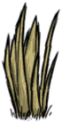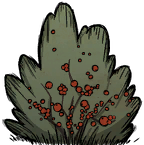
 ) deixarão de crescer, abelhas(
) deixarão de crescer, abelhas( ) e borboletas(
) e borboletas( ) ficarão dormentes até a primavera e o mais importante: o frio chegou e eventualmente o Deerclops(
) ficarão dormentes até a primavera e o mais importante: o frio chegou e eventualmente o Deerclops( ) também ira.
) também ira.
Os iglus do Mactusk(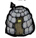) irão se formar. O Mactusk() e o seu grupo de caça irão vasculhar o perímetro durante o dia e durante a tarde e noite retornam ao iglu. Mactusk estara acompanhado de 2 lobos congelados e o seu filhote (que faz nada). Ao avistar o jogador ele ira sinalizar os seus lobos para atacar e ira utilizar o seu dardo para atacar o jogador a distância. Se o jogador se aproximar do Mactusk, ele ira começar a fugir até que tenha uma distância suficiente para atacar o jogador com os seus dardos novamente. Se o jogador perseguir o Mactusk por tempo suficiente, ele perderá o interesse no jogador e ira tratar como se nunca estivesse ali, caso os lobos não estiverem perseguindo o jogador ou estiverem mortos agora é uma boa hora pra matar o Mactusk(). Ele é um mob que recebe stunlock então basta pressionar o botão de ataque. Se você for sortudo receberá o chapéu() e o dente( ) dele.
) dele.
O seu chapéu() além de ter a maior durabilidade do jogo (25 dias) restaura 6.25 de  por minuto, o suficiente para combater a insanidade causada pela tarde e a noite e oferece uma proteção moderada contra o fio ( equivalente a um 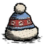).
por minuto, o suficiente para combater a insanidade causada pela tarde e a noite e oferece uma proteção moderada contra o fio ( equivalente a um 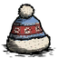).
O seu dente é utilizado para fazer uma bengala () (na seção de vestimentas) que quando equipada oferece 20% de velocidade extra.
Ao vasculhar pelo mundo perto do oceano, pinguins irão surgir do oceano e criarão ninhos (pequenos locais com várias geleiras ), onde ficarão o resto do inverno deitados por la guardando os seus ovos(
), onde ficarão o resto do inverno deitados por la guardando os seus ovos( ). Os pinguins possuem um intervalo de ataque muito curto e atacam em conjunto então não é recomendado enfrentar eles. Mas as geleiras()que eles causam ao redor dos seus ninhos podem ser mineradas com segurança, gerando muito gelo(
). Os pinguins possuem um intervalo de ataque muito curto e atacam em conjunto então não é recomendado enfrentar eles. Mas as geleiras()que eles causam ao redor dos seus ninhos podem ser mineradas com segurança, gerando muito gelo( ) para o jogador que pode ser utilizado como preenchimento nas panelas ou para fazer a máquina lançadora de neve(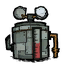).
Embora o inverno desabilita o crescimento de várias plantas, comida ainda é abundante devido a presença de gelo() e caso o jogador necessite de recursos básicos as ervas daninhas (
) para o jogador que pode ser utilizado como preenchimento nas panelas ou para fazer a máquina lançadora de neve(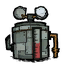).
Embora o inverno desabilita o crescimento de várias plantas, comida ainda é abundante devido a presença de gelo() e caso o jogador necessite de recursos básicos as ervas daninhas ( ) são uma ótima opção pois continuam spawnando durante o inverno. Caso as vestimentas de frio estejam quebrando, é possível reparar-las com um kit de costura (que inclusive também repara a pedra térmica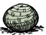)
) são uma ótima opção pois continuam spawnando durante o inverno. Caso as vestimentas de frio estejam quebrando, é possível reparar-las com um kit de costura (que inclusive também repara a pedra térmica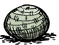)
Ao chegar próximo ao fim do inverno (dia 29 e 30) o Deerclops() poderá spawnar, geralmente durante a noite. É recomendando que durante os avisos de sua chegada o jogador saia de sua base e vá para um local onde não há nenhuma estrutura importante. O Deerclops pode ser kitado ( 3 ataques e corre um pouco longe ) ou tankado ( desde que tenha alguma fogueira pois os ataques do DC podem congelar o jogador). A maioria dos bosses possuem uma aura de insanidade, quando o jogador se aproximo do boss eles rapidamente perdem sanidade() então é importante levar alimentos de sanidade (
 ).Também é possível utilizar ajuda de outros mobs como beefalos(
).Também é possível utilizar ajuda de outros mobs como beefalos( ), aranhas() e Treeguards(
), aranhas() e Treeguards( ). Quando o Deerclops morrer ele deixará 8 (
). Quando o Deerclops morrer ele deixará 8 ( ) e o seu olho(
) e o seu olho( ) que é utilizado para fazer um guarda-chuva de cabeça(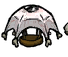) protegendo 100% contra a chuva e relâmpagos e oferecendo proteção no verão.
) que é utilizado para fazer um guarda-chuva de cabeça(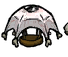) protegendo 100% contra a chuva e relâmpagos e oferecendo proteção no verão.